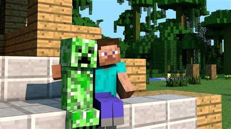

Hi! Here are some Minecraft tips for beginers!
Tip 1:Never dig straight down
- Digging straight down can lead to problems such as lava, mobs and high falls onto dripstone.

Tip 2:Always light up your builds
- Not lighting up your builds lead to hostile mobs spawning IN YOUR BUILDS!! Literaly, NOBODY wants that.
Tip 3: #craft a bed
- Crafting a bed lets you to:
- Respawn(Unless you're in hardcore)
- Sleep(obviously)and skip night.
Tip 4:Don't throw away wooden pickaxes
- Never throw away wooden pickaxes. Instead, before you can find any coal, use the wooden pickaxes as furnace fuel. It cuts back on needing to find coal and it gives the wooden pickaxe a new life.
Tip 5:ALways try to find diamonds at Y-59
- With the new 1.18 ore generation, diamonds are more common at lower levels, so the best Y coordinate to find diamonds is Y-59.
Tip 6:Do not use gold pickaxes
- While it is true that gold pickaxes break blocks the fastest, they can't break ores and they break after mining just 32 BLOCKS. And also, if you enchant a gold pickaxe and a diamond pickaxe with efficiency 5, the diamond pickaxe mines faster.

Never use this!

Use this instead!
Tip 7:In the nether, brew a fire risistance potion.
- Fire risistance potions prevent you from burning.